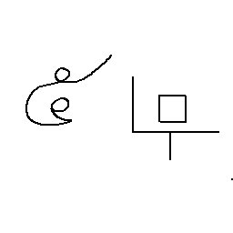

This refers to self. derived from "monk"
This refers to self. derived from "monk"i recommend you read these first:
language quirks:
This refers to self. derived from "monk"
This refers to "you". the person reading. derived from the korean word "neo" (너)
 This refers to all objects that have existed. or may not even exist. due to the fact that there are no specifiers
This refers to all objects that have existed. or may not even exist. due to the fact that there are no specifiers
Example:
refers to everything that is "mine". (all objects owned by self)
"desiring knowledge" where the function (verb) is "desire". and the arguments (noun) being "knowledge"
I am no saint
To be high up.
means: give you (mine (your (currently desired thing))) or in other words: I will give you what you want
Indicated by an arrow tip right below a symbol. the similiar word in english being "This"
meaning: the thing i am currently talking about. and referring to
for example:
I witnessed a thing that is now gone.
I helped a thing end its suffering
I stabbed it with a spear 142 times. and made sure it screamed to its last breath
Also survivor in this language means "To be high up. peacefully" :)
meaning: five unspecified objects above ground. in this case implying Five Pebbles. where the symbol holding "objects" being "ground"